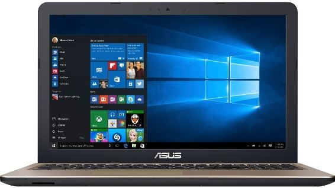

Пример компьютеров и их характеристик
Характеристики:
Тип оборудования: Ноутбук
Цвет: Черный, золотистый
Материал крышки ноутбука: Пластик
Материал подставки под запястья: Пластик
Процессор ноутбука: AMD E1-7010 1500 МГц
Кэш процессора ноутбука: 1 Мб
Количество ядер: 2
Оперативная память: 4 ГБ DDR3L
HDD: 500 ГБ
Оптический привод: Нет
Тип видео: Встроенное
Видео: AMD Radeon R2
Звук: Встроенные динамики
Встроенный микрофон: есть, 2 шт.
Экран: 15.6" (1366х768)
Сенсорный экран: Нет
Подсветка экрана ноутбука: Светодиодная (LED)
Поверхность экрана: матовая
Сеть: 100 Мbit
Wi-Fi: 300 Мбит/с
Bluetooth: Есть, 4.0
Встроенная камера: есть
Слоты для карт памяти: SD, SDHC, SDXC
Разъемы ноутбука: 1х USB 2.0, 1х USB 3.0, 1х USB 3.1 Type-C, VGA (RGB), HDMI, Аудио выход (3.5 мм jack)
Клавиатура: Островного типа с цифровым полем
Цвет клавиш: Черный
Указатель: TouchPad
Сканер отпечатков пальцев: Нет
Питание: от сети, аккумулятор
Тип аккумулятора: Li-ion
Количество ячеек: 3 ячейки
Запас энергии: 33 Вт·ч
Размеры (ширина х глубина х высота): 381.4 х 251.5 х 27.2 мм
Вес ноутбука: 2 кг
Безопасность: Слот для Kensington lock
|